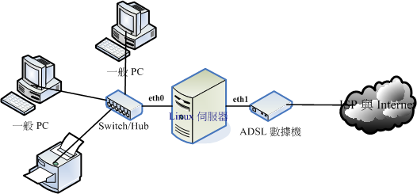
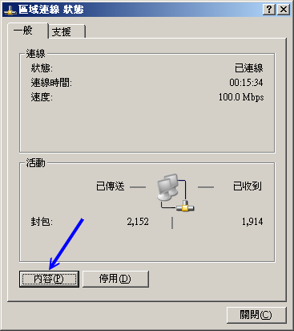
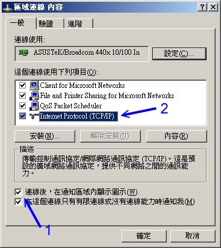
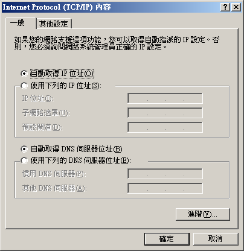

老规矩，在正式的进入
DHCP (Dynamic Host Configuration Protocol)
主机设定之前，我们先来认识一下 DHCP 这个协议吧！还有，需要了解的是，我们是否有需要『一定』得设定 DHCP
这个服务器呢？这里都需要厘清一下概念喔！
 什么是 DHCP 协议
什么是 DHCP 协议
在开始 DHCP 的说明之前，我们先来复习一下之前在
网络基础里面提到的几个网络参数吧！
要设定好一个网络的环境，使计算机可以顺利的连上 Internet ，那么您的计算机里面一定要有底下几个网络的参数才行，分别是：
IP, netmask, network, broadcast, gateway, DNS IP
其中，那个 IP, netmask, network, broadcast 与 gateway 都可以在
/etc/sysconfig/network-scripts/ifcfg-eth[0-n] 这些档案里面设定，DNS 的地址则是在
/etc/resolv.conf 里头设定。呵呵！只要这几个项目设定正确，那么计算机应该就没问题的可以上网了！
所以说，您家里面的 3, 4 部计算机，您都可以手动的来设定好您所需要的网络参数，
然后利用
NAT 主机的功能，就可以大摇大摆的
连上 Internet 了！真是不错 ^_^，不是吗？
好了，现在让我们换一个大一些些的场景吧！假设您是学校宿舍的网络管理员，所管理的学生计算机大概有 100
部好了，那么您怎么设定好这 100 部的计算机呢？
- 直接每一部计算机都让您登门拜访手动的去设定好？
- 将所有的学生都集合起来，然后精神训话.....喔不！是直接教导一下怎么设定？还是
- 藉由一部主机来自动的分配所有的网络参数给宿舍内的任何一部计算机？
这三种解决方案所需要的时间都不相同，如果您选择的是(1)，那么鸟哥个人认为，您不是工作狂就是疯掉了，
因为所要花费的时间与您所得的薪水与付出的心力是完全不成比例的。如果选择是(2)那么很可能您会被挂上独裁者、
没良心的管理员的称号！如果是选择(3)呢？恭喜您！这个方案的管理时间花费最短，也是最不麻烦的作法啦！
呵呵！知道我要说些什么了吗？是的！这个
DHCP (Dynamic Host Configuration Protocol)
主机最主要的工作，就是在进行前面提到的第三个方案，也就是自动的将网络参数正确的分配给网域中的每部计算机，
让客户端的计算机可以在开机的时候就立即自动的设定好网络的参数值，这些参数值可以包括了 IP、netmask、network、gateway
与 DNS 的地址等等。如此一来，呵呵！身为管理员的您，只要注意到这一部提供网络参数的主机有没有挂掉就好了，
其他同学们的个人计算机，哈！您想都不必想要怎么去帮忙！因为 DHCP 主机已经完全都帮您搞定啦！
^_^！ 阿！当管理员最大的幸福就是可以喝喝茶、聊聊天就能控管好一切的网络问题呢！
DHCP 的运作方式
你必需要知道的是，DHCP 通常是用局域网络内的一个通讯协议，他主要藉由客户端传送广播封包给整个物理网段内的所有主机，
若局域网络内有 DHCP 主机时，才会响应客户端的 IP 参数要求。所以啰，DHCP 服务器与客户端是应该要在同一个物理网段内的。
而客户端取得 IP 参数的程序可以简化如下：
- 客户端利用广播封包发送 DHCP 需求：
若客户端设定使用 DHCP 取得 IP (在 Windows 内为『自动取得 IP』)，则当客户端开机或者是重新启动网络卡时，
客户端主机会发送出 DHCP 要求给所有物理网段内的计算机。此封包的目标 IP 会是 255.255.255.255，
所以一般主机接收到这个封包后会直接予以丢弃，但若局域网络内有 DHCP 服务器时会如何回应？
- DHCP 主机响应消息：
DHCP 主机在接收到这个客户端的需求后，针对这个客户端的硬件地址 (MAC) 与本身的设定数据来进行下列工作：
- 到服务器的登录文件中寻找该用户之前是否曾经用过某个 IP ，若有且该 IP 目前无人使用，则提供此 IP 给客户端；
- 若配置文件针对该 MAC 提供额外的固定 IP (static IP) 时，则给予该 IP 的设定；
- 若不符合上述两个条件，则随机取用目前没有被使用的 IP 给用户，并记录下来。
此外，DHCP 服务器还会提供一个租约时间给客户端，并等待客户端的响应。
- 客户端接受 DHCP 服务器提供的参数并设定本身的网络环境：
若一切安好，则客户端会接受该次取得的 IP 并开始处理本身的网络环境，包括改写 /etc/resolv.conf 等等；
并且会向 DHCP 服务器发送一个确认封包，确认该参数已被接受。
- DHCP 服务器记录该次租约行为：
客户端回传讯息以建立租约行为后，该次租约会被记录到主机的登录文件上头，
并且开始租约计时喔！那么该次租约何时会到期而被解约 (真可怕的字眼！) ？你可以这样想：
- 客户端脱机：不论是关闭网络接口 (ifdown)、重新启动 (reboot)、关机 (shutdown)
等行为，皆算是脱机状态，这个时候 Server 端就会将该 IP 回收，并放到 Server 自己的备用区中，等待未来的使用；
- 客户端租约到期：前面提到 DHCP server 端发放的 IP 有使用的期限，客户端使用这个 IP
到达期限规定的时间，而且没有重新提出 DHCP 的申请时，就需要将 IP 缴回去！这个时候就会造成断线，而用户也可以再向
DHCP 主机要求再次分配 IP 啰
以上就是 DHCP 这个协议在 Server 端与 Client 端的运作状态，由上面这个运作状态来看，我们可以晓得，只要
Server 端设定没有问题，加上 Server 与 Client 在硬件联机上面确定是 OK 的，那么 Client 就可以直接藉由 Server
来取得上网的网络参数，当然啦，只要我们这些管理员能够好好的、正确的管理好我们的 DHCP
，嘿嘿！那么上网的设定自然就变成一件很简单的事情啦！
DHCP 服务器给予客户端的 IP 类型：
在上面的步骤里面，注意到第二步骤了吗？就是服务器会去比较客户端的 MAC 硬件地址，并判断该 MAC
是否需要给予一个固定的 IP 呢！所以啦，我们可以设定 DHCP 服务器给予客户端的 IP 类型主要有两种：
- 固定 (Static) IP：
只要那个客户端计算机的网络卡不换掉，那么 MAC 肯定就不会改变，由于 DHCP 可以根据 MAC 来给予固定的
IP ，所以该计算机每次都能以一个固定的 IP 连上 Internet ！呵呵！
这种情况比较适合当这部计算机需要用来做为提供区域内的一些网络服务的主机之用。那么如何在 Linux
上面知道您的 MAC 呢？很简单啦！有很多的方式，最简单的方式就是使用 ifconfig 及 arp 来进行：
1. 观察自己的 MAC 可用 ifconfig：
[root@linux ~]# ifconfig eth0
eth0 Link encap:Ethernet HWaddr 00:08:03:A3:E0:34
inet addr:192.168.1.254 Bcast:192.168.1.255 Mask:255.255.255.0
....底下省略....
2. 观察别人的 MAC 可用 ping 配合 arp
[root@linux ~]# ping -c 1 192.168.1.101
[root@linux ~]# arp -n
Address HWtype HWaddress Flags Mask Iface
192.168.1.101 ether 00:08:75:A0:B2:78 C eth0
|
- 动态 (dynamic) IP：
Client 端每次连上 DHCP 所取得的 IP 都不是固定的！都直接经由 DHCP 所随机由尚未被使用的 IP 中提供！
除非您的局域网络内的计算机有可能用来做为主机之用，所以必需要设定成为固定 IP ，否则使用动态 IP
的设定比较简单，而且使用上面具有较佳的弹性。怎么说呢？假如您是一个 ISP 好了，而您只申请到
150 个 IP 来做为您的客户联机之用。那么您是否真的只能邀集到 150 的使用者？呵呵！当然不啰！我可以邀集
200 个使用者以上呢！
为什么？这样想好了，我今天开了一家餐馆，里面只有 20 个座位，那么是否我一餐只能卖给 20
个人呢？当然不是啦！因为客人是人来人往的，有人先吃有人后吃，所以同样是 20 个座位，但是可以有
40 个人来吃我的简餐，因为来的时间不一样嘛！了解了吗？呵呵！对啦！您这个 ISP 虽然只有 150 个 IP
可以发放，但是因为您的使用者并非 24 小时都挂在在线的，所以您可以将这 150 个 IP 做良好的分配，让
200 个人来『轮流使用』这 150 个 IP 哩！
Tips:
其实 IP 只有 Public IP 与 Private IP 两种，中文翻译成『公共 IP』与『私有 IP』这两个，
至于其他所谓的『静态 IP』、『实体 IP』、『虚拟 IP』、『浮动式 IP』等等，都是藉由一些 IP 取得的方式来分类的，
关于 IP 的种类我们在网络基础中谈过了，记得再好好的厘清一下观念喔！
|  |
事实上现在主流的 ADSL 宽带拨接上网也有使用到『
静态
IP 』与『
固定 IP 』之类的概念喔！
举例来说好了，hinet/seed net 等主要 ISP 都有提供所谓的：『一个固定 IP 搭配 7~8 个浮动 IP 』的
ADSL 拨接功能，也就是说同样透过一条电话线拨接到 ISP ，但是其中一个拨接是可以取得固定的 IP 呢！
而其他的则是非固定的 IP ，DHCP 的 static/dynamic 跟这个玩意儿有点类似啦！ ^_^
关于租约所造成的问题：
怪了！如果我们观察上面 DHCP 运作模式的第二个步骤，您会发现最后面 DHCP 服务器还有给予还有一个租约期限！
干嘛还要这样的一个期限呢？其实设定期限还是有个优点啦！最大的优点就是可以避免 IP
被某些使用者一直占用着，但该使用者却是 Idle (发呆) 的状态！
举个例子来说，我们刚刚不是说到，我有 150 个 IP ，但是偏偏我有 200 个用户吗？我们以
2006 年的世界杯足球赛来说明好了。假设每个使用者都急着上网知道世足赛的消息，
那么某些热门对战时段网络将可能达到使用尖峰！也就是说，这 200 个人同时要来使用这 150 个
IP ，有可能吗？当然不可能！肯定会有 50 个人无法联机，因为『很抱歉！目前系统正在忙线中，请您稍后再拨！』
那怎么办？这个时候租约到期的方式就很有用处啦！那几个已经联机进来很久的人，
就会因为租约到期而被迫脱机，这个时候该 IP 就会被释放出来，哈哈！大家赶快抢呀！先抢到先赢喔！
所以，那 50 个人 (包括被迫脱机的那个朋友) 只好继续的、努力的、加油的来进行 DHCP 的要求啰！ ^_^""
虽然说是优点，但是其实如果站在使用者的角度来看，还是可能会造成公愤的！凭什么大家一起交钱，
我先联机进来就需要先被踢出去？～呵呵！所以啰，如果要当 ISP ，还是得要先规划好服务的方针才行呦！
这样您可以了解租约到期的行为了吗？！ ^_^
既然有租约时间，那么是否代表我用 DHCP 取得的 IP
就得要『手动』的在某个时间点去重新取得新的 IP 呢？不需要的啦！因为目前的 DHCP
客户端程序大多会主动的依据租约时间去重新申请 IP (renew) 的！也就是说在租约到期前你的 DHCP
客户端程序就已经又重新申请更新租约时间了。所以除非 DHCP 主机挂点，
否则您所取得的 IP 应该是可以一直使用下去的！
多部 DHCP 主机在同一物理网段的情况
或许您曾经发现过一件事情，那就是当我的网域里面有两部以上的 DHCP 主机时，
到底哪一部主机会设定我的这部计算机所发出的 DHCP 要求？呵呵！很抱歉，俺也不晓得！
因为在网络上面，很多时候都是『先抢先赢』的， DHCP 的回应也是如此！当 Server1 先响应时，您使用的就是
Server1 所提供的网络参数内容，如果是 Server2 先响应，您就是使用 Server2 的参数来设定您的
PC ！不过，前提之下当然是这些计算机的『物理联机』都是在一起的啊！
何时需要架设 DHCP 服务器
既然 DHCP 的好处是『免客户端设定』，而且对于行动装置的上网方面非常的方便！那么是否代表你就得要架设一部
DHCP 呢？那可不一定！接下来要告知大家的是几个概念性的问题，
您倒不一定『必需』遵守底下的一些概念呢！反正，自己的网域自己『爽』就好啦！
使用 DHCP 的几个时机
在某些情况之下，倒是强烈的建议架设 DHCP 主机的！什么情况呢？例如：
- 具有相当多行动装置的场合：
例如您的公司内部很多笔记本电脑 (笔电) 使用的场合！因为这种笔电本身就是移动性的装置，
如果每到一个地方都要去问人家『喂！您这边的网络参数是什么？』还得要担心是否会跟人家的
IP 相冲突等等的问题！这个时候，DHCP 可就是您的救星啰！
- 区域内计算机数量相当的多时：
另外一个情况就是您所负责的网域内计算机数量相当庞大时，
大到您没有办法一个一个的进行说明来设定他们自己的网络参数，这个时候为了省麻烦，还是架设
DHCP 来的方便吶！况且，维护一部您熟悉的 DHCP 主机，要比造访几十个不懂计算机的人要简单的多哩！^_^
虽然 DHCP 有很多好处，但是您有没有发现一个步骤怪怪的呀！回头看一下那个步骤一，
客户端在开机的时候会主动的发送讯息给网域上的所有机器，这个时候，如果网域上就是没有 DHCP
主机呢？很抱歉，那么您的这部客户端计算机，『仍然会持续的发送讯息！』
真正的时间与次数我不晓得会有多久，不过，肯定会超过 30 秒以上，
甚至可以达到一分钟以上！哇！那么这段时间您能干嘛？呵呵！除了等、还是等！
所以啰，如果计算机数不多，还是使用手动的方式来设定一下就好了！方便嘛！
- 在您网域内的计算机，有很多机器其实是做为主机的用途，很少 Client 需求，那么似乎就没有必要架设 DHCP ；
- 更极端的情况是，像一般家里，只有 3 ~ 4 部计算机，这个时候，架设 DHCP 只能拿来练练功力，事实上，并没有多大的效益；
- 当您管理的网域当中，大多网络卡都属于老旧的型号，并不支持 DHCP 的协议时；
- 很多用户的信息知识都很高，那么也没有需要架设 DHCP 啦。
如前所述，上面的都是概念性的说法，事实上，一件事情的解决之道是有很多的方案的，
没有所谓的『完全正确』的方案，只有『相对可行、并且符合经济效益与功能』的方案！
所以啰，架设任何网站之前，请先多评估评估吶！
事实上，目前市面上的 IP 分享器已经便宜到爆了！而 IP 分享器本身就含有 DHCP 的功能，
所以如果你只是想要单纯的使用 DHCP 在你的局域网络当中而已，那么建议你直接购买一部 IP 分享器来使用即可，
因为至少他很省电。如果你还有其他考虑的话，才来架设 DHCP 吧！底下我们以一个简单的范例来架设 DHCP 先。
所需套件与套件结构
DHCP 的套件需求很简单，就是只要服务器端软件即可。所需套件为：
- dhcp
提供整个 DHCP 服务器的主要配置文件与启动的 script 及执行文件等等重要数据。
真的只要一个套件就好了，而且没有什么很重大的相依性问题呢！请拿出你的原版光盘用 rpm 来安装，
或者直接用 yum 在线安装也可以！档案很小啦！至于整个套件的结构是这样的：
- /etc/dhcpd.conf
这个就是 dhcp 服务器的主要配置文件咯！在某些 Linux 版本上头这个档案可能不存在，所以如果你确定有安装 dhcp
套件却找不到这个档案时，请手动自行建立他即可。这个档案的设定很简单啦，我们底下主要就是在谈这个档案的设定而已哩。
不过配置文件的实际位置还是得要参考 /etc/init.d/dhcpd 的规范才是。
Tips:
其实 dhcp 套件在释出的时候都会附上一个范例档案，你可以使用『 rpm -ql dhcp 』来查询到
dhcpd.conf.sample 这个范例档案，然后将该档案复制成为 /etc/dhcpd.conf 后，再手动去修改
/etc/dhcpd.conf 即可，这样设定比较容易咯！
| |
- /usr/sbin/dhcpd
启动整个 dhcp daemon 的执行档啊！其实最详细的执行方式应该要使用『 man dhcpd 』来查阅一番的呢！^_^
- /var/lib/dhcp/dhcpd.leases
这档案颇有趣的！我们前面原理部分不是有提到『租约』吗？DHCP
服务器端与客户端租约建立的启始与到期日就是记录在这个档案当中的咯！
就跟你说很简单吧！整个套件数据也不过才如此而已呢！
主要配置文件 /etc/dhcpd.conf
的语法
其实 DHCP 的设定很简单啊，只要将 dhcpd.conf 设定好就可以启动了。不过编辑这个档案时你必须要留意的是：
- 『 # 』为批注符号；
- 除了括号那一行之外，其他的每一行后面都要以『 ; 』做为结尾！这是最容易出错的地方。
- 通常设定的项目都有独特的名称，以：『 <参数代号> <设定内容> 』来处理，例如：
default-lease-time 259200;
- 某些设定项目必须以 option 来设定，基本方式为『 option <参数代码> <设定内容> 』例如：
option domain-name "your.domain.name";
基本上，我们刚刚前面提过说，
DHCP 的 IP 分配可分为给予动态 IP 与静态 IP ，其中又需要了解的是，如果需要设定静态 IP
的话，那么就必须要知道要设定成静态 IP 的那部计算机的硬件地址 (MAC) 才行，请使用 arp 及
ifconfig 来查知您的界面的 MAC 吧！此外，我们需要设定的项目大概有几项：
- 整体设定 (Global)
包括有租约期限、DNS 的 IP 地址、路由器的 IP 地址还有动态 DNS (DDNS) 更新的类型等等。
当静态 IP 及动态 IP 内没有规范到某些设定时，则以整体设定值为准。常使用参数有：
- default-lease-time 时间：
预设的租约时间，后面的时间参数默认单位为秒；
- max-lease-time 时间：
最大租约时间，当客户端超过租约时间却尚未更新 IP 时，最长可以使用该 IP 的时间；
- option domain-name "领域名"：
如果你在 /etc/resolv.conf 里面设定了一个『 search google.com 』的话，这表示当你要搜寻主机名时，
DNS 系统会主动帮你加上这个领域名的意思。所以这个设定参数也会修改 /etc/resolv.conf 喔！
- option domain-name-servers IP1,
IP2：
这个设定参数可以修改客户端的
/etc/resolv.conf 档案！就是 nameserver 所接的那个 DNS IP 啰！特别注意设定参数最末尾为『servers』 (有 s 喔)；
- ddns-update-style 类型：
因为 DHCP
客户端所取得的 IP 通常是一直变动的，
所以某部主机的主机名与 IP 的对应就很难处理。此时 DHCP 可以透过 ddns (请参考
合法主机名 与 DNS 章节的说明)
来更新主机名与 IP 的对应。不过我们这里不谈这么复杂的东西，所以你可以将他设定为 none 喔。
- option routers 路由器的地址：
设定路由器的 IP 所在，记得那个『 routers 』要加 s 才对！
- option broadcasst-address 广播地址：
设定广播地址而已。如果没有设定的话，系统应该会自动依据 class A, B, C 的原则来计算出广播地址吧！
- 动态 IP 分配设定：
用来设定随机给予 IP 的方式，只要给予网域 (network 以及 netmask) 配合 range 这个参数就能够给予限制的 IP 范围了。
设定方式并不怎么难啊。
- 静态 IP 的设定方式：
透过硬件地址 (MAC) 来处理 IP 的取得。使用的是 host 这个设定参数，
配合底下两个常见的参数值来处理：
- hardware ethernet 硬件地址：
利用网络卡上面的固定硬件地址来设定，亦即该设定仅针对这个硬件地址有效的意思；
- fixed-address IP地址：
给予一个固定的 IP 地址的意思。
说再多也没有什么用啦！让我们实际来玩一个案例吧！你就知道该如何处理了。
一个局域网络的 DHCP 服务器设定案例
假设我的环境当中，Linux 服务器除了 NAT 主机之外还得要负责其他服务器，例如邮件服务器的支持。
而在后端局域网络中则想要提供 DHCP 的服务。整个硬件配置的情况如同下图所示：

图一、局域网络的实体连接情况
如上图所示，假设我的 Linux 有两块接口，其中 eth0 对内而 eth1 对外，至于其他的网络参数设计为：
- 内部网段设定为 192.168.1.0/24 这一段，且 router 为 192.168.1.254 ，此外， DNS 主机的 IP
为中华电信的 168.95.1.1 及 Seednet 的 139.175.10.20 这两个；
- 我想要让每个使用者预设租约为 3 天，最长为 6 天；
- 只想要分配的 IP 只有 192.168.1.21 到 192.168.1.100 这几个，其他的 IP 则保留下来；
- 我还有一部主机，他的 MAC 是『 00:40:95:30:43:B4 』，我要给他的主机名为 vbird-inside ，且 IP 为 192.168.1.5 这个。
则我的配置文件就会像底下这个样子了：
[root@linux ~]# vi /etc/dhcpd.conf
# 1. 整体的环境设定
# 当底下的 subnet 与 host 没有设定时，以这里的设定值为准喔！
ddns-update-style none; <==不要更新 DDNS 的设定
default-lease-time 259200; <==预设租约为 3 天
max-lease-time 518400; <==最大租约为 6 天
option routers 192.168.1.254; <==这就是预设路由
option broadcast-address 192.168.1.255; <==这是广播地址啊
option domain-name-servers 168.95.1.1, 139.175.10.20;
# 上面是 DNS 的 IP 设定，这个设定值会修改客户端的 /etc/resolv.conf 档案内容！
# 此外，你可以设定多部 DNS 主机，不过必须要以逗号『 , 』分隔开才行。
# 2. 关于动态分配的 IP
# Network_IP↓ Netmask_IP↓
subnet 192.168.1.0 netmask 255.255.255.0 {
range 192.168.1.21 192.168.1.100; <==分配的 IP 范围
option subnet-mask 255.255.255.0; <==可重复设定 netmask 地址
option nis-domain "vbird.tsai"; <==额外给的 NIS 相关参数
option domain-name "vbird.tsai"; <==在 /etc/resolv.conf 给一个搜寻领域
# 3. 关于静态的 IP 啊！
# 主机名↓
host vbird-inside {
hardware ethernet 00:40:95:30:43:B4; <==客户端网卡 MAC
fixed-address 192.168.1.5; <==给予固定的 IP
}
}
# 相关的设定参数意义，请查询前一小节的介绍，或者 man dhcpd.conf
|
够简单吧！这样就设定好了！你可以复制上头的数据然后修改一下，让里头的 IP 参数符合你的环境，
就能够设定好你的 DHCP 服务器了。接下来理论上你就能够启动 dhcp 了。不过，在某些早期的 Linux distribution 上面，
当你的 Linux 主机具有多个接口时，你的一个设定可能会让多个接口同时来监听，那就可能会发生错误了。
举例来说，我们现在的设定是 192.168.1.0/24 这个在 eth0 上头的网域，假设你还有一个界面 eth1 在 192.168.2.0/24 好了，
那万一你的 DHCP 同时监听两块接口的话，想一想，如果 192.168.2.0/24 网域的客户端发送出 dhcp 封包的要求时，
他会取得什么 IP ？所以啰，我们就得要针对 dhcpd 这个执行文件设定他监听的接口，
而不是针对所有的接口都监听啊！您说是吧！^_^！那如何处理呢？在 CentOS (Red Hat 系统) 可以这样做：
[root@linux ~]# vi /etc/sysconfig/dhcpd
DHCPDARGS="eth0"
|
这样做就好了，这是因为启动 dhcpd 的 script 会主动的呼叫这个参数档案。如果是在其他版本的 Linux 当中，
你可以直接修改 /etc/init.d/dhcpd 这个 script 档案内容，找到『 daemon /usr/sbin/dhcpd ... 』那一行，
并新增网络卡代号即可，例如：
[root@linux ~]# vi /etc/init.d/dhcpd
# 约在第 58 行左右会找到：
daemon /usr/sbin/dhcpd ${DHCPDARGS} 2>/dev/null
|
在上述的特殊字体部分，你可以持续加入想要增加的监听接口啦！更多的功能可以参考『 man dhcpd 』的解释。
不过这个动作在较新的版本上面已经不需要了，因为新版本的 dhcp 会主动的分析服务器的网段与实际的 dhcpd.conf 设定，
如果两者无法吻合，就会有错误提示，人性化多了。 ^_^！
接下来我们可以开始启动 dhcp 试看看啰！
DHCP 服务器的启动与观察
开始来启动 dhcp 吧！另外你要注意的是：dhcpd 使用的埠口是 port 67 ，并且启动的结果会记录在 /var/log/messages
档案内，你最好能去观察一下 /var/log/messages 所显示的 dhcpd 相关信息才好。
1. 就启动吧！
[root@linux ~]# /etc/init.d/dhcpd start
2. 看看埠口启动的情况
[root@linux ~]# netstat -tlunp
Active Internet connections (only servers)
Proto Recv-Q Send-Q Local Address Foreign Address PID/Program name
udp 0 0 0.0.0.0:67 0.0.0.0:* 7294/dhcpd
3. 看看登录文件的输出信息
[root@linux ~]# tail -n 30 /var/log/messages
Dec 5 10:58 linux dhcpd: Internet Systems Consortium DHCP Server V3.0.1
Dec 5 10:58 linux dhcpd: Copyright 2004 Internet Systems Consortium.
Dec 5 10:58 linux dhcpd: All rights reserved.
Dec 5 10:58 linux dhcpd: For info, please visit http://www.isc.org/sw/dhcp/
Dec 5 10:58 linux dhcpd: Wrote 0 deleted host decls to leases file.
Dec 5 10:58 linux dhcpd: Wrote 0 new dynamic host decls to leases file.
Dec 5 10:58 linux dhcpd: Wrote 0 leases to leases file.
Dec 5 10:58 linux dhcpd: Listening on LPF/eth0/00:40:fa:25:2a:db/192.168.1/24
Dec 5 10:58 linux dhcpd: dhcpd startup succeeded
|
看到这些就是成功的象征啦！恭喜你啊！真是『福气啦！』不过，万一你看到的登录档是类似底下的模样呢？
Dec 5 11:11 linux dhcpd: /etc/dhcpd.conf line 10: semicolon expected.
Dec 5 11:11 linux dhcpd: subnet
Dec 5 11:11 linux dhcpd: ^
Dec 5 11:11 linux dhcpd: Configuration file errors encountered -- exiting
|
这表示应该是第 10 行左右有点问题，问题点应该是没有分号 (semicolon) 而已。而分号应该是在指数符号 (^) 指的地方，
也就是 subnet 附近而已，很容易分辨吧！那如果是出现如下的模样呢？
** You must add a ddns-update-style statement to /etc/dhcpd.conf.
To get the same behaviour as in 3.0b2pl11 and previous
versions, add a line that says "ddns-update-style ad-hoc;"
Please read the dhcpd.conf manual page for more information. **
|
这表示你忘记在 /etc/dhcpd.conf 里面加入 ddns-update-style 的参数宣告啦！
瞧一瞧这个输出信息，就能够晓得你的设定错误所在，根据错误来处理你的 dhcp 配置文件吧！
内部主机的 IP 对应
如果您有仔细的瞧过前几章的
网络基础的话，那么应该还会记得那个
/etc/hosts
会影响内部计算机的连接速度很大吧！那么我现在使用 DHCP 之后，糟糕！我怎么知道哪一部 PC
连上我的主机，那要怎么填写 /etc/hosts 的内容呢？这真是太简单了！就将所有可能的计算机 IP
都加进去该档案呀！ ^_^ ！以鸟哥为例，在这个例子中，鸟哥的分配的 IP 至少有 192.168.1.5, 192.168.1.21 ~
192.168.1.100 ，所以 /etc/hosts 可以写成：
[root@linux ~]# vi /etc/hosts
127.0.0.1 localhost.localdomain localhost
192.168.1.254 vbird-server
192.168.1.5 static-ip
192.168.1.21 dynamic-021
192.168.1.22 dynamic-022
.....
192.168.1.100 dynamic-100
|
这样一来，所有可能连进来的 IP 都已经有纪录了，哈哈！当然没有什么大问题啰！ ^_^
DHCP 的 Client 端，可以是 Windows 也可以是 Linux 呢！由于鸟哥的领域内刚好有两部 Client
端的计算机，一部为 Linux (CentOS 4.4) 另一部为 Windows xp ，这里就提一下，分别是怎样设定的呢？
Linux 客户端
Linux 的网络参数设定还记得吧？不记得的话就得要打屁股了！在
连上 Internet 章节内我们谈过自动取得 IP 的方式，设定真的很简单：
[root@client ~]# vi /etc/sysconfig/network-scripts/ifcfg-eth0
DEVICE=eth0
BOOTPROTO=dhcp <==就是他！指定这一个就对了！
ONBOOT=yes
[root@client ~]# /etc/init.d/network restart
|
改完之后，就将我们的整个网络重新启动即可 (不要使用 ifdown 与 ifup ，因为还有预设路由要设定！)
。请注意，如果您是在远程进行这个动作，您的联机『肯定会挂掉！』，因为网络卡被您关了嘛！
呵呵！所以请在本机前面才进行喔！如果执行的结果有找到正确的 DHCP 主机，那么几个档案可能会被更动喔：
1. DNS 的 IP 会被更动呢！查阅一下 resolv.conf 先：
[root@linux ~]# cat /etc/resolv.conf
; generated by /sbin/dhclient-script
search vbird.tsai <==是否记得设定过 domain-name 呢？
nameserver 168.95.1.1 <==这就是我们原本的设定值。
nameserver 139.175.10.20
2. 观察一下路由啦！
[root@linux ~]# route -n
Kernel IP routing table
Destination Gateway Genmask Flags Iface
192.168.1.0 0.0.0.0 255.255.255.0 U eth0
169.254.0.0 0.0.0.0 255.255.0.0 U eth0
0.0.0.0 192.168.1.254 0.0.0.0 UG eth0
# 嗯！没错！路由也被正确的捉到了！OK的啦！
3. 察看一下客户端的指令吧！
[root@linux ~]# netstat -tlunp
Proto Recv-Q Send-Q Local Address Foreign Address State PID/Program name
udp 0 0 0.0.0.0:68 0.0.0.0:* 3996/dhclient
# 你没看错！确实是有个小程序在监测 DHCP 的联机状态吶！
4. 看一看客户端租约所记载的信息吧！
[root@linux ~]# cat /var/lib/dhcp/dhclient-eth0.leases
lease {
interface "eth0";
fixed-address 192.168.1.100; <==这就是为啥我每次取得的 IP 是固定的。
option subnet-mask 255.255.255.0;
option routers 192.168.1.254;
option dhcp-lease-time 259200;
option dhcp-message-type 5;
option domain-name-servers 168.95.1.1,139.175.10.20;
option dhcp-server-identifier 192.168.1.254;
option nis-domain "vbird.tsai";
option broadcast-address 192.168.1.255;
option domain-name "vbird.tsai";
renew 3 2006/12/6 18:15:41; <==下一次预计更新 (renew) 的时间点
rebind 5 2006/12/8 05:26:26;
expire 5 2006/12/8 14:26:26;
}
# 这个档案会记录该适配卡所曾经要求过的 DHCP 信息喔！重要！
# 有没有看出来，他几乎就与你设定的 /etc/dhcpd.conf 类似？ ^_^
5. 额外看一下 NIS 的领域名有没有设定妥当啊？
[root@linux ~]# nisdomainname
vbird.tsai <==因为我们有设定 nis-domain 的项目啊！
|
有没有发现其实你的客户端取得的数据都被记载在 /var/lib/dhcp/dhclient-eth0.leases 里头啊？
如果你有多张网卡，那么每张网卡自己的 DHCP 要求就会被写入到不同档名的档案当中去！
观察该档案就知道你的数据是如何啰！这可也是挺重要的呦！
Windows 客户端
在 Windows 底下设定 DHCP 协议以取得 IP 实在是很简单喔！我们以目前最常用的 Windows XP 来说明的话，
你可以依据『开始』-->『设定』-->『控制台』-->『网络和因特网联机』-->『网络联机』-->『区域联机』
来开始一步一步的进行下面的动作喔：
- 在点选了上面的局域网络后，你的桌面上应该会出现如下的图示：

图二、局域网络的 DHCP 取得方式之设定
- 在上图二的地方按下箭头所指的『内容』处，就会出现如下画面啰：

图三、局域网络的 DHCP 取得方式之设定
在上面的画面当中，建议你可以在箭头所指的 1 处勾选那两个项目，如此一来在桌面最底下的右侧就会出现一个网络符号，
以后你就可以点选该图示来进入这个画面了！比较方便啦。然后在箭头 2 的地方勾选 Internet Protocol (TCP/IP) 的项目，
并点选『内容』后，就可能进入到设定的画面。
- 接下来如下图所示，你只要勾选『自动取得 IP 地址』那个项目，然后按下『确定』并离开设定画面，
如此一来 Windows 就会开始自动取得 IP 的工作了。

图四、局域网络的 DHCP 取得方式之设定
- 那你如何确认你的 IP 已经被顺利的取得呢？如果是在早期的 Windows 95 ，你可以使用一个名为『 winipcfg 』
来观察你的 IP 设定。不过在 windows 2000 以后，你可能需要使用命令提示字符来观察才行。你可以使用：
『开始』-->『程序集』-->『附属应用程序』-->『命令提示字符』来取出终端机，然后这样处理看看：
C:\Documents and Settings\dmtsai> ipconfig /all
....前面省略....
Ethernet adapter 区域联机:
Connection-specific DNS Suffix . : vbird.tsai
Physical Address. . . . . . . . . : 00-D0-18-AF-6E-81
Dhcp Enabled. . . . . . . . . . . : Yes
Autoconfiguration Enabled . . . . : Yes
IP Address. . . . . . . . . . . . : 192.168.1.99
Subnet Mask . . . . . . . . . . . : 255.255.255.0
Default Gateway . . . . . . . . . : 192.168.1.254
DHCP Server . . . . . . . . . . . : 192.168.1.254 <==这一部 DHCP 主机
DNS Servers . . . . . . . . . . . : 168.95.1.1
139.175.10.20
Lease Obtained. . . . . . . . . . : 2006年12月5日 下午 10:22:37
Lease Expires . . . . . . . . . . : 2006年12月8日 下午 10:22:37
C:\Documents and Settings\dmtsai> ipconfig /renew
# 这样可以立即要求更新 IP 信息喔！
|
这样就 OK 的啦！简单吧！
检查租约档案
客户端会主动的纪录租约信息，那主机端更不能忘记记录啰！主机端是记录在这个地方：
[root@linux ~]# cat /var/lib/dhcp/dhcpd.leases
lease 192.168.1.99 { <==就是那部 Windows 的纪录
starts 2 2006/12/05 14:23:37;
ends 5 2006/12/08 14:23:37;
binding state active;
next binding state free;
hardware ethernet 00-d0-18-af-6e-81;
uid "\001\000\340\030\257n\003";
client-hostname "vbird_work";
}
lease 192.168.1.100 { <==就是那部 Linux 的纪录
starts 2 2006/12/05 15:37:33;
ends 5 2006/12/08 15:37:33;
binding state active;
next binding state free;
hardware ethernet 00:30:20:1d:c3:6e;
}
|
从这个档案里面我们就知道有多少客户端已经向我们申请了 DHCP 的 IP 使用了呢！
很容易了解吧！
使用 ether-wake 实行远程自动开机
(remote boot)
既然已经知道客户端的 MAC 地址了，如果
客户端的主机符合一些电源标准，
并且该客户端主机所使用之网络卡暨主板支持网络唤醒的功能时，我们就可以透过网络来让客户端计算机开机了。
如果你有一部主机想要让他可以透过网络来启动时，你必须要在这部客户端计算机上进行：
- 首先你得要在 BIOS 里面设定『网络唤醒』的功能，否则是没有用的喔！
- 再来你必须要让这部主机接上网络线，并且电源也是接通的。
- 将这部主机的 MAC 抄下来，然后关机等待网络唤醒。
接下来请到永远开着的主机 DHCP 主机上面 (其实只要任何一部 Linux 主机均可！) ，
下载 ether-wake.c 这个档案：
然后开始编译他：
[root@linux ~]# gcc -O -Wall -o ether-wake ether-wake.c
|
此时你的家目录下应该会有一个名为 ehter-wake 的档案，假设客户端主机的 MAC 为 11:22:33:44:55:66 好了，
那么你想要让这部主机被唤醒，就这样做吧：
[root@linux ~]# ./ether-wake 11:22:33:44:55:66
# 更多功能可以这样查阅喔：
[root@linux ~]# ./ether-wake -u
|
然后你就会发现，哈哈！那部客户端主机被启动了！以后如果你要连到局域网络内的话，
只要能够连上你的防火墙主机，然后透过这个 ether-wake 软件，就能够让你局域网络内的主机启动了，
控管上面就更加方便的啦！您说是吧！ ^_^
- DHCP 的主要用途为何？
DHCP 主机的主要用途就是在于自动分配网络参数给 Client 端的计算机，以降低网域当中可能发生的 IP
冲突问题，以及减少网管人员到处检查错误的伤脑筋！
- DHCP 主要的两种 IP 分配模式为何？
主要的两种分配模式分别为 Dynamic IP 与 Static IP ， Static IP 透过 MAC 的比对，至于 Dynamic IP
则是直接取用网域中尚未被使用到的 IP 来进行 Client 端的分配。
- 在有 DHCP 主机存在的网域当中，且 client 端亦使用 DHCP 来规划客户端的网络参数，那么请问，在该网域当中，Client
端是如何取得 IP 的呢？
- 首先， Client 端会发出一个 DHCP 要求封包；
- server 端接收到要求后，会主动的响应信息给 Client ；
- Client 若接受该 DHCP 主机所提供的参数，则主机会记录下租约信息，至于 client 端则开始以主机提供的参数设定其网络
- DHCP 是如何发送 Static IP 的？可以使用何种指令取得该信息？
DHCP 主要利用网络卡的硬件地址，亦即俗称的『网络卡卡号』，也就是 MAC 来进行 Client 端的比对的，至于主动取得
Client 端的方式，可以透过 ping 以及 arp 来获得。
- 在 DHCP 的租约档，亦即 /var/lib/dhcp/dhcpd.leases 当中，记录了什么信息？
这个档案主要记录了 Client 端连上 Server 端的纪录数据，他会被 DHCP 主机用来判定与 Client 端的租约行为喔！
- DHCP 的登录档放置于何处？
就是最重要的 /var/log/messages 这个档案啦(预设状况下！)